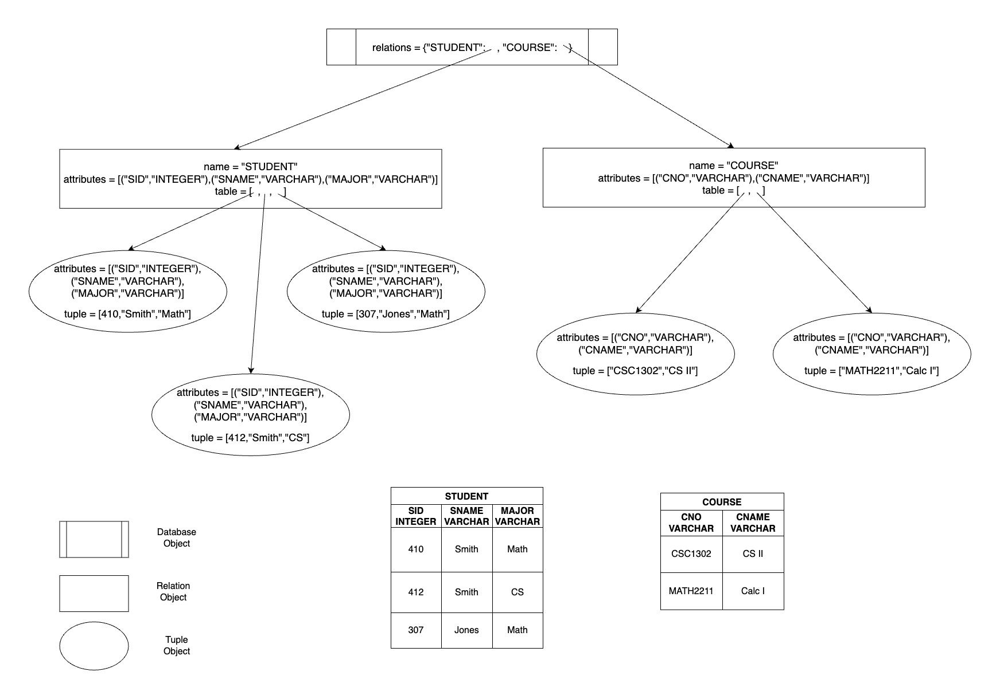

Programming Assignment 3 (Relational Database and Algebra)
Database, Relation, Tuple Classes

Database Class: Encapsulates the entire database, which is nothing but a collection of relations (or tables). We shall use a dictionary to store the relations with relation name serving as the key and the Relation object as the value.
class Database:
def __init__(self):
self.relations = {}
Relation Class: Encapsulates a relation or table; includes both schema and instance.
class Relation:
def __init__(self,name,attributes):
self.name = name.upper() # name of relation
self.attributes = attributes # list of (aname,atype) pairs,
# aname: attribute name, atype: "INTEGER", "DECIMAL", or "VARCHAR"
self.table = [] # list of tuple objects
Tuple Class: Encapsulates a tuple or row of a relation; includes both schema and instance.
class Tuple: def __init__(self,attributes): self.attributes = attributes self.tuple = []
TO DO
Download the Skeleton files (files.zip) and implement all the methods in these Python classes. Compile and run the four driver programs. Sample runs of the Driver programs are shown in runs.html.
What to Submit?
A zip or tar archive, ra.zip or ra.tar containing all files and directories as shown below:$ ls Database.py Driver1_setup.py Driver2_initializeDB.py Driver3_removeDuplicates.py Driver4_unionintersectdifference.py Relation.py Tuple.py drinks $ $ ls drinks BAR.dat DRINKER.dat LIKES.dat catalog.dat BEER.dat FREQUENTS.dat SERVES.dat $